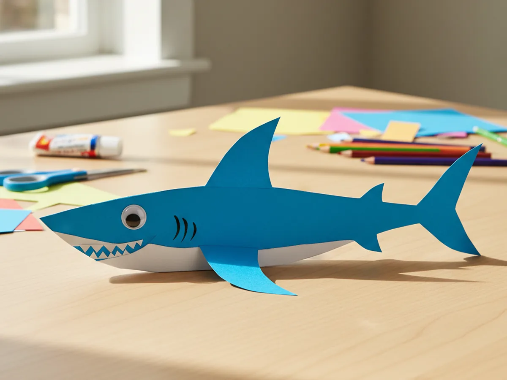
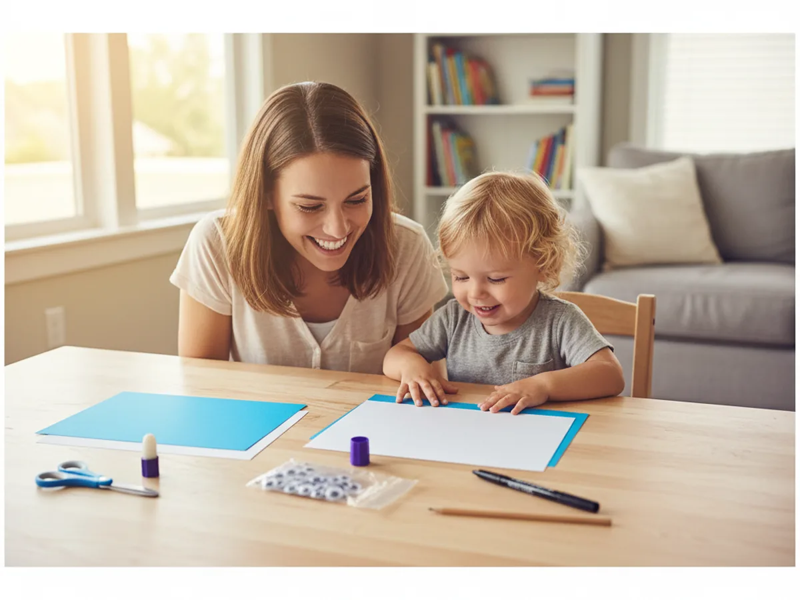
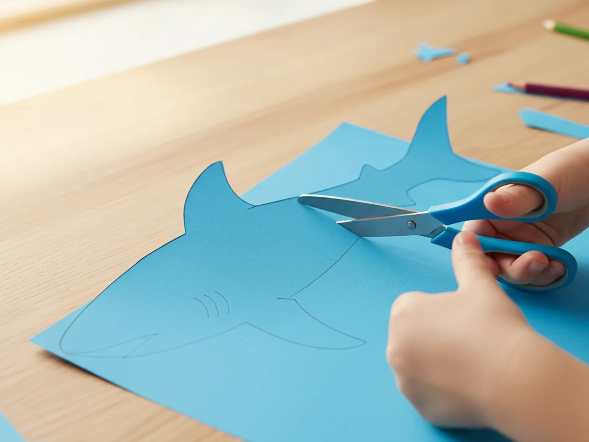
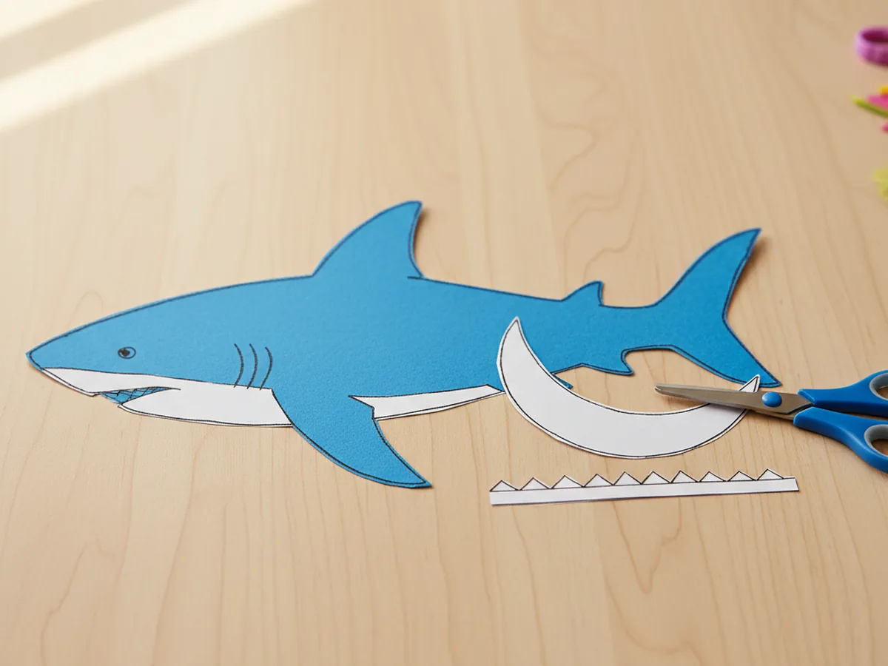
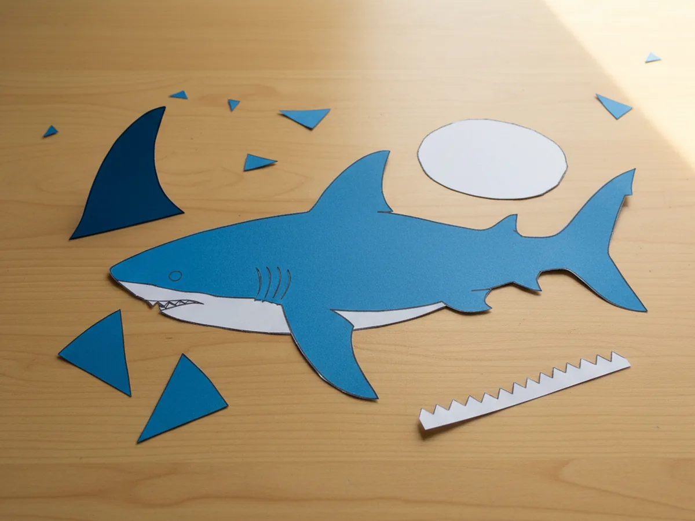
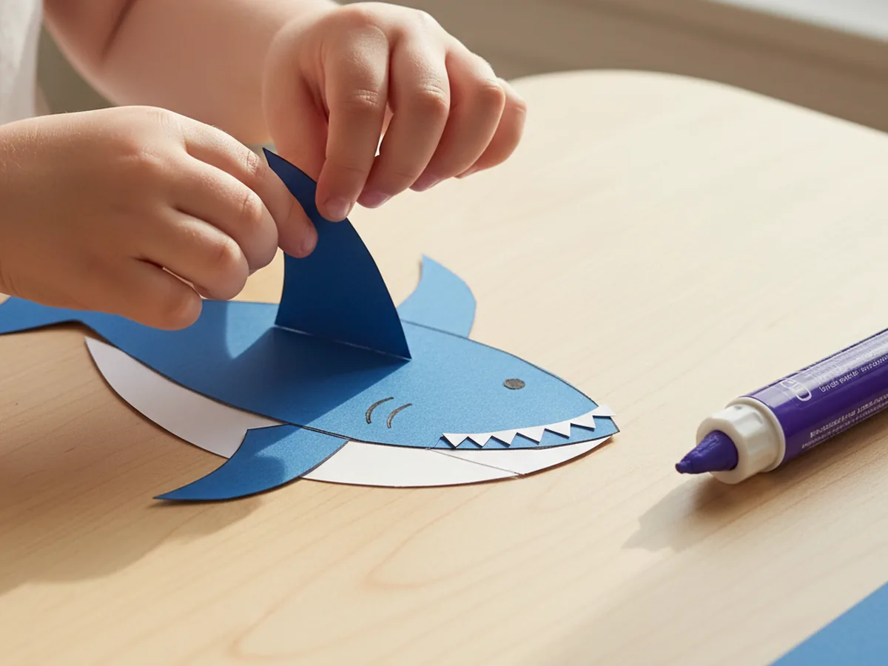
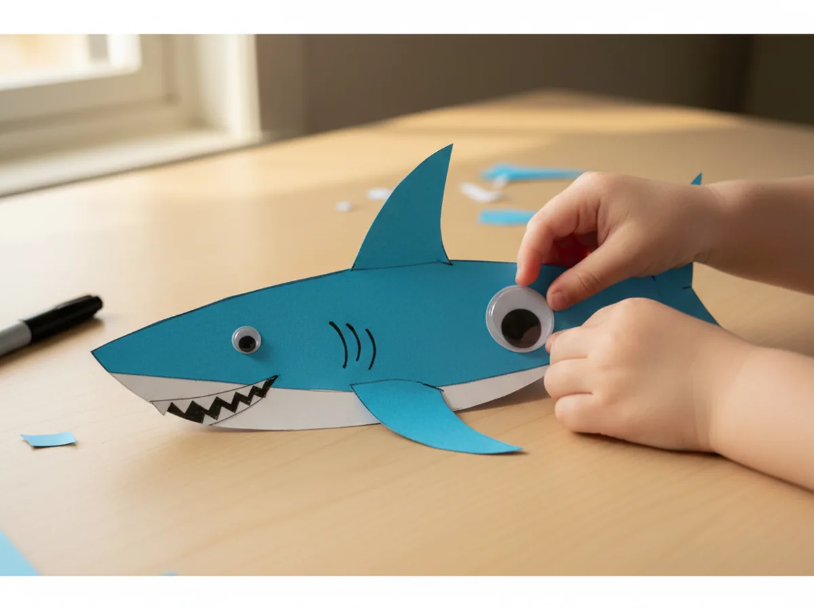
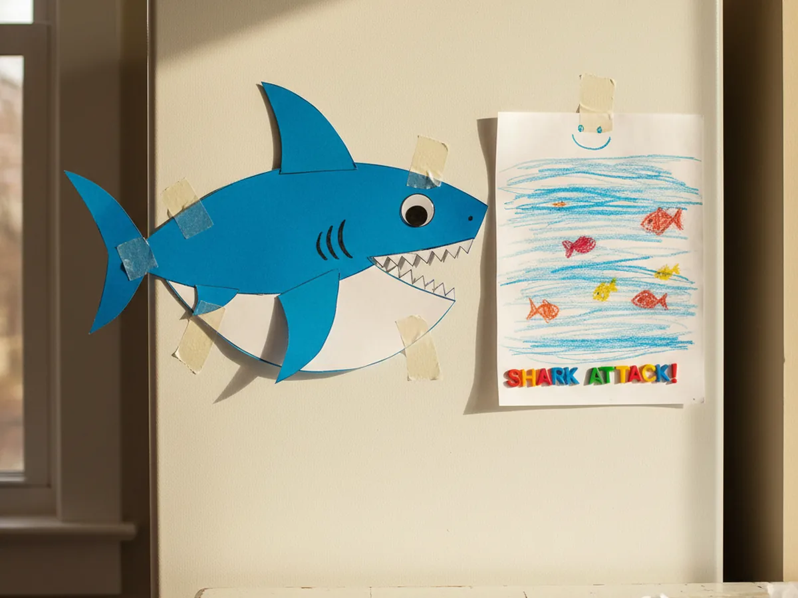

If your little one is obsessed with sea creatures, this paper shark craft is going to be a huge hit at your kitchen table. It comes together from just a few sheets of cardstock and a handful of basic supplies, and the finished shark looks adorable enough to hang on the fridge or use for an ocean-themed playtime. The whole project takes about thirty minutes from start to finish, which means you can squeeze it in after lunch or before bath time without it feeling rushed. 🦈
Even a four year old can do most of this craft with a tiny bit of help, and older kids will love adding their own creative touches. Every handmade paper shark turns out a little different, and that is exactly what makes them so charming. Roll up your sleeves, grab the blue cardstock, and let me walk you through it.
Why Kids Love This Craft
Sharks have a kind of magic for young children. They are friendly, a tiny bit thrilling, and the star of so many favorite shows, songs, and books. When a child gets to make their own easy paper shark craft, they feel like they are bringing a mini ocean friend to life, and that imaginative spark is what hooks them from the first minute. Many kids will name their shark on the spot and act out a whole underwater adventure before the glue is even dry.
The project also gives little hands gentle practice with several useful skills. Cutting around the shark body, snipping the zigzag teeth, lining up the fins, and sticking the googly eye in just the right spot all build fine motor control and focus. The steps are simple enough that no one gets frustrated, and the result looks impressive enough that your child will feel genuinely proud.
Best of all, this cute paper shark craft has no single right way to look. Some sharks come out grinning, some look fierce, and some look like they are mid-yawn, and every version is wonderful. That open-ended quality is a relief for kids who sometimes worry about getting things perfect, and it lets the personality of your particular little one show through. ✨

What You'll Need
Here is everything you need to make this paper shark craft at home. Lay the supplies out before you sit down with your child so the activity flows smoothly without anyone getting up to hunt for something mid-project.
- Astrobrights Mega Collection Bright Blue Cardstock, the bright shark blue that makes the body really pop.
- Astrobrights Bright White Cardstock (8.5 x 11, 65 lb), for the belly piece and the zigzag teeth.
- Fiskars 5 Inch Pointed-Tip Kids Scissors, perfect for little hands cutting curves and zigzags.
- Elmer's Disappearing Purple School Glue Sticks (30 Count), washable and easy to twist open for small fingers.
- Self-Adhesive Googly Wiggle Eyes (Assorted Sizes), one big eye gives the shark all its personality.
- Sharpie Fine Point Permanent Marker (Black, Single), for drawing gill lines and a tiny smile detail.
- Crayola Broad Line Markers (10 Classic Colors), useful if your child wants to add ocean bubbles or extra details around the shark.
- A pencil, for lightly drawing the shark body outline before cutting.
Step-by-Step Instructions
This paper shark craft step by step is genuinely easy, even for a first-time crafter. Take it one step at a time, and let your child do as much as they comfortably can. 💝
Step 1: Draw and Cut the Shark Body
Place a sheet of bright blue cardstock landscape on the table. Use a pencil to draw a simple shark body shape, about eight inches long. Picture a stretched egg shape with a small pointed snout on one end, a flat belly along the bottom, and a tail that comes to a point on the other end. Cut along the pencil line to create the main body of your paper shark craft.
If your child is on the younger side, sketch the shape yourself and let them focus on the cutting. Slightly wobbly curves are completely fine and actually give the finished shark a charming, handmade personality.

Step 2: Cut the White Belly and Zigzag Teeth
From the sheet of white cardstock, cut a long curved belly piece that runs roughly along the bottom edge of the shark body, leaving the blue showing on top. Then cut a narrow strip of white paper about four inches long and snip a row of small triangle zigzags along one edge to make the teeth. These two simple white pieces are what give the kid-friendly paper shark craft its classic shark look.
The teeth do not need to be perfectly even. In fact, a slightly uneven row of zigzag teeth makes the shark look more real and a lot more fun.

Step 3: Cut the Fins from Blue Scraps
Grab those blue cardstock leftovers from step one. Cut one tall pointed triangle for the dorsal fin that will go on top of the shark, and two smaller pointed triangles for the side fins. If you want, cut a small extra triangle for a second little fin near the tail. Each fin only needs to be roughly cut, so let your child handle this part as much as they can.
Lay all three fins out next to the body so you can see how everything will fit together before any glue comes out. This little previewing step helps younger children understand where each piece belongs.

Step 4: Glue the Belly, Teeth, and Fins in Place
Now the shark really starts to come to life. Run a glue stick across the back of the white belly piece and press it onto the lower half of the blue body. Glue the zigzag teeth strip along the front of the shark's face, with the points facing outward like a wide grin. Then glue the dorsal fin onto the top of the body and the side fins onto the lower body where you imagine the shark's fins would be. Smooth each piece down firmly with flat fingers so they stick well to your simple paper shark craft.
If any piece overlaps an edge of the body, you can either trim the overlap off or leave it for a slightly cartoony look. Either way works beautifully.

Step 5: Add the Eye and Draw the Gills
Pick out one large self-adhesive googly eye and stick it near the front of the shark's head, a little above the row of teeth. Then use a black fine point marker to draw three small curved gill lines on the side of the shark, just behind the eye. These tiny finishing details transform the cardstock pieces into a real little character. The eye placement alone can change the entire personality of your handmade paper shark craft.
If you want, add a small black dot for a nostril near the snout or a tiny curved line below the teeth for extra expression. Less is usually more here.

Step 6: Display or Play With Your Finished Shark
Hold up the finished paper shark craft and give it the proud full-family showing it deserves. Stick it on the fridge with a magnet, tape it to a bedroom wall as part of an ocean-themed corner, or pop it into a pretend-play ocean scene with other paper sea creatures swimming around. Some kids will immediately make their shark "swim" across the kitchen table for the rest of the afternoon, and that is honestly the best ending possible.
This is the perfect moment for a quick photo of your child holding their finished shark up next to a big smile. If you want a little ocean inspiration, the friendly whale shark is one of my favorite real sharks to talk about with kids since it is enormous, gentle, and covered in beautiful spots.

Variations to Try
Hammerhead Shark Version: Replace the rounded shark head with a wide T-shaped hammerhead made from a separate piece of blue cardstock, and stick a googly eye on each end of the wide head. Older kids love how silly and unique a hammerhead looks compared to a regular shark.
Torn Paper Ocean Background: Mount the finished shark on a large piece of light blue construction paper, then tear strips of darker blue and aqua paper and glue them along the bottom and edges as waves and water. The torn paper texture adds an instant scene, and tearing the strips is very satisfying for younger toddlers who are still learning to cut.
Paper Bag Shark Puppet: Use the same shapes, but glue them onto a folded brown paper lunch bag so the shark's mouth opens and closes when your child slides their hand inside. This turns the craft into a real puppet for storytime and ocean pretend play, which keeps the fun going for days after the craft itself is finished.
Final Thoughts
This paper shark craft is one of those simple little projects that gives so much more than just a finished cutout. It gives you a sweet half hour at the table with your child, a giggly invitation to make up shark stories together, and a paper character that often gets played with for days afterward. The supplies are basic, the steps are gentle, and the result always brings a big smile. 🌊
If your family makes a few of these together, I would love to see them. Snap a photo of your finished sharks and pin this tutorial on Pinterest so other craft-loving mamas can find it easily. Happy crafting, friend.
More Crafts You'll Love
If your little one enjoyed this paper shark craft, they will adore these other easy ocean-themed paper projects too: